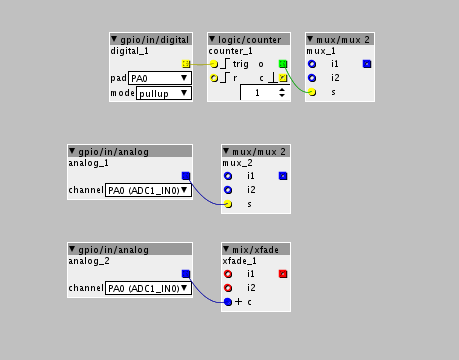

I have an axoloti with lots of pots but only two buttons, and wondering what the best method would be for setting up multiple stomps/effects that I could latch on and off with pots, maybe some type of volume or parameter control? I am also confused how to use the soldered buttons to latch something permanently on/off, they seem to trigger as long as I hold it using the button object. Thanks for any feedback, if anyone has any guitar patches to share please do! 
Guitar Effects Chain
janvantomme
#2
Some quick ideas, haven't tested them since I don't have an axoloti with extra hardware on my desk now.
Use the button with a counter to toggle a mux or demux object on/off. Can also be used with a mux 8 for instance to select between 8 signals.
Use a pot to toggle a mux object.
Use a pot to control a mix/xfade object to mix between dry wet, or between different effects.

Thanks I will definitely try these out along with the effects from your book! Super appreciate it!